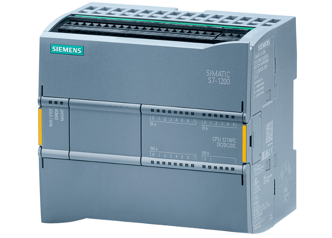
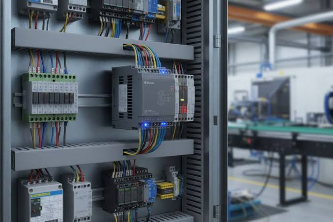

O CLP é um computador industrial que atua como o cérebro de muitas máquinas e instalações, normalmente no nível 2 da pirâmide da automação
É construído para trabalhar em ambientes industriais com poeira, vibrações e variações de temperatura. Substitui circuitos de relés por programas de controle, frequentemente escritos em Ladder.

O CLP repete um ciclo: lê as entradas, executa o programa e atualiza as saídas para controlar o processo.
Recebem sinais de sensores, botoeiras, chaves e outros dispositivos instalados na máquina.
Processa as informações e executa a lógica de controle armazenada no programa.
Representa condições e ações de forma semelhante a diagramas elétricos de relés.
Enviam comandos para contatores, válvulas, lâmpadas e outros equipamentos de controle.

O CLP industrial é projetado para executar seu ciclo de controle de forma previsível, em tempos definidos que podem ser de poucos milissegundos. Esse comportamento, chamado determinismo, ajuda a manter o sincronismo e a segurança da máquina.
Os CLPs também trocam dados com outros equipamentos por redes industriais. O Profinet, por exemplo, utiliza tecnologia Ethernet para conectar CLPs, módulos de entrada e saída, inversores e sistemas supervisórios.
O Profinet pode transmitir dados de controle cíclicos e informações de diagnóstico acíclicas pela mesma rede. Isso facilita o acompanhamento do funcionamento e a identificação de falhas nos equipamentos.
O CLP permite automatizar tarefas repetitivas, alterar a lógica por programação e coordenar equipamentos com rapidez e confiabilidade. A aplicação deve sempre considerar os requisitos de segurança da máquina.